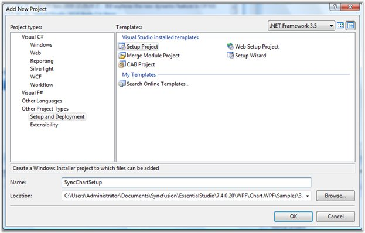
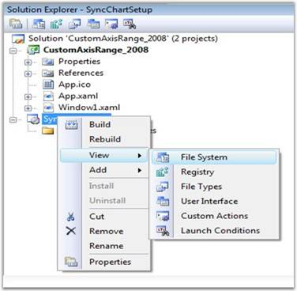
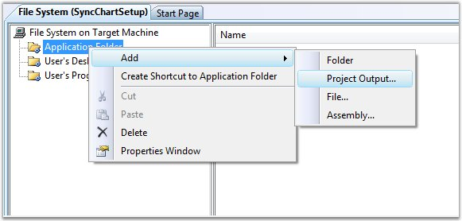
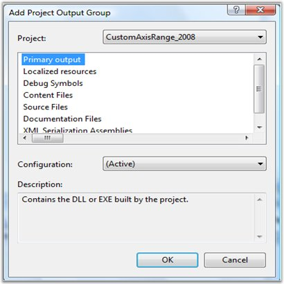
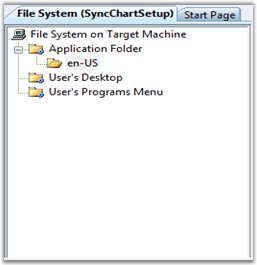
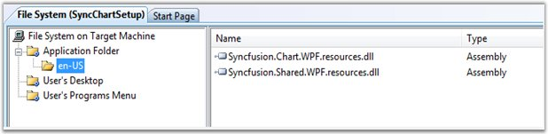
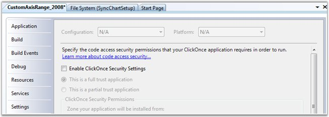
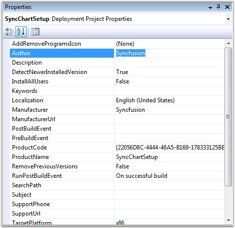

This section will walk you through the steps for creating a setup project for Essential Chart.
1. Open the project for which you are going to create a setup project.
2. Go to Solution Explorer, right-click the solution, go to Add and then click Add New Project. Add a Setup and Deployment project as shown in the below image.

Figure 43: Adding a Setup and Deployment Project
This adds a project named "SyncChartSetup" to the existing project.
3. Right Click SyncChartsetup project and select View -> File System as in the below image.

Figure 44: Viewing the File System
4. In File System, right-click Application Folder, go to Add and then click Project Output.

Figure 45: Adding Project Output Folder
The following dialog is displayed.

Figure 46: Add Project Output Group Dialog
5. Right-click Application folder, go to Add and then click Folder. Name it as “en-US”.

Figure 47: Creating New Folder under Application Folder
6. Add the resource assemblies in this folder. Right click en-US folder, go to Add, click Assembly and then select the resource assemblies.

Figure 48: Selecting Resource Assemblies
7. Go to the properties page of the parent project and uncheck "Enable ClickOnce Security Settings" option as follows:

Figure 49: Editing Properties of the Parent Project
8. Now set the Author name and Manufacturer name in the properties of the Setup Project.

Figure 50: Editing Properties page of the Setup Project
9. Set the solution configuration mode to Release and build the project.
You will notice the setup file created in the release folder of the Setup project.